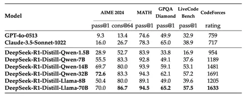

Сегодня разберём, как DeepSeek-R1 на 671B параметров дистиллировали в модель на 32 миллиарда параметров. Зачем вообще это нужно? Вышедшая в сентябре 2024 года o1 доказала, что test-time scaling работает — если дать модели подумать, то она даст более качественный ответ. Однако тогда пользователю не показывали сырую цепочку рассуждений, а особенности метода не раскрывали. Было непонятно, как это работает, хотя догадки имелись: например, использование process-reward-модели и поиск по дереву.
Но эксперименты DeepSeek показали, что дело совсем не в них. Компания выложила технический отчёт, в котором раскрыла секрет. В работе рассматривают три модели: R1-Zero, R1 и R1-Distill. О первых двух мы подробно писали вот тут, а сегодня речь пойдёт о третьей модели.
Всего выложили шесть моделей — от 1,5В до 70В параметров на базе Qwen2,5 и Llama3. Все они без RL, использовали только SFT, две-три эпохи по 800К примеров. Контекст составил 32К токенов, а архитектуру моделей не трогали вообще. Ключевая идея авторов в том, что самое дорогое в ризонинг-моделях — не веса, а траектории рассуждений. Их достаточно один раз добыть с помощью RL на большой модели и скопировать в «ученика».
Авторы взяли промпты в четырёх основных — математика, код, STEM, логика — и одном общем домене, куда вошли перевод, письмо и так далее. Далее сгенерировали примеры с помощью R1, но не финальной, а с чекпоинта после cold-start SFT и первой стадии RL. Потом сделали rejection sampling, отобрав верные ответы, а затем отфильтровали, выбросив цепочки рассуждений со смешением языков или длинными абзацами. Следом — SFT.
У всех моделей-учеников был один и тот же рецепт, но разные стартовые LR — чем больше LLM, тем он меньше. Обратите внимание, что значительную часть датасета составляли математика и код (76%), поэтому дистиллированные модели лучше всего показывают себя в этих доменах. Отметим также, что в основе учеников на 1,5В и 7В параметров лежала Qwen2.5-Math, которая уже хорошо работает с математикой.
В итоге DeepSeek-R1-Distill-Qwen-32B удаётся обходить о1 практически по всем бенчмаркам. Также модель соответствует учителю примерно на 91% — и это при 20-кратном сжатии числа параметров, а также переходе от MoE-архитектуры к dense.
Авторы делают вывод, что дистилляция мощной модели в маленькую даёт неплохие результаты, однако превзойти учителя ученик как ни крути не сможет. Дистилляция не даёт модели генерировать собственные траектории лучшего качества. И хотя тренировать учителя дорого — финальный прогон R1 у DeepSeek стоил 247 тысяч долларов, — стоимость каждого ученика вполне разумная, ведь требуется только две-три эпохи на готовом датасете.
Разбор подготовил
Душный NLP
